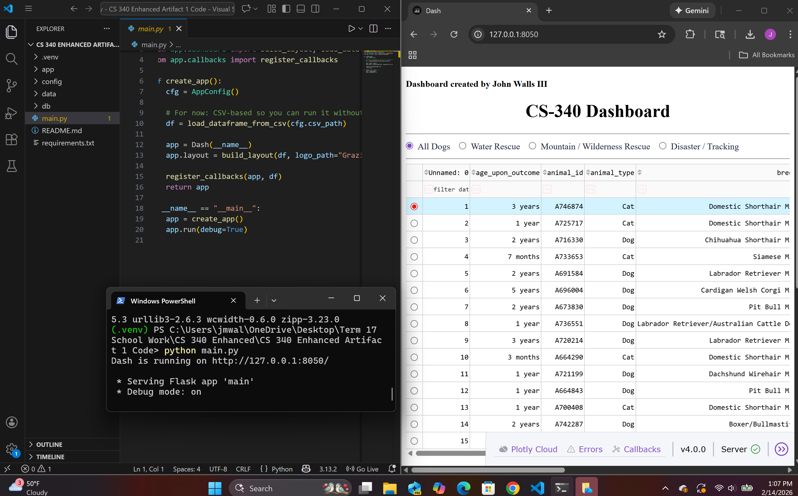

Professional Self-Introduction
I am a Computer Science student with experience in software development,
data analysis, and system design. This ePortfolio highlights selected
artifacts and enhancements that demonstrate my ability to design,
implement, and improve software solutions using industry-standard
practices. These projects reflect my growth throughout the Computer
Science program at SNHU and support my preparation for professional
software development roles.
Code Review CS 499
This comprehensive code review covers all selected artifacts for my CS 499 Capstone ePortfolio.
It reviews existing functionality, identifies areas for improvement, and outlines planned enhancements
across software engineering and design, algorithms and data structures, and databases. Instructor
feedback from Milestone One was incorporated to improve clarity, organization, and technical explanations.
Watch the video:
CS 499 Capstone Code Review – ePortfolio Artifacts
Enhancement One: Software Design & Engineering CS 499
Artifact: CS 340 Enhanced Dashboard (Python + Dash)
This enhancement refactors my original CS 340 dashboard application into a modular, layered architecture.
Data access logic was isolated into a dedicated module, configuration and environment-specific settings were
centralized, and user interface layout and callback logic were separated into clearly defined components.
These changes improved readability, reduced coupling, and made the application easier to maintain and extend.
- Architecture: separated UI, configuration, and data-access layers
- Maintainability: improved organization for easier updates and testing
- Security mindset: removed hardcoded values and improved configuration handling
Enhanced Repository:
View Enhancement One Code
Narrative:
CS 499 Enhancement One Narrative (DOCX)
Application Execution Evidence
Dashboard Running (Local Execution)

Enhancement Three: Database Integration CS 499
Artifact: MongoDB Integration with Environment Toggle
This enhancement extends the original dashboard by integrating a MongoDB NoSQL database
as an alternative data source to the original CSV-based implementation. A dedicated
database access layer encapsulates CRUD operations and remains fully decoupled from
the user interface.
- Database Layer: Implemented MongoDB connection and CRUD abstraction
- Configuration Control: Environment-driven data source selection
- Security Awareness: Removed hardcoded credentials and centralized configuration
- Scalability: Application now supports dynamic backend data retrieval
Database Evidence
Mongo Enabled Application Startup

MongoDB Compass – Animals Collection

Dashboard Using MongoDB Data